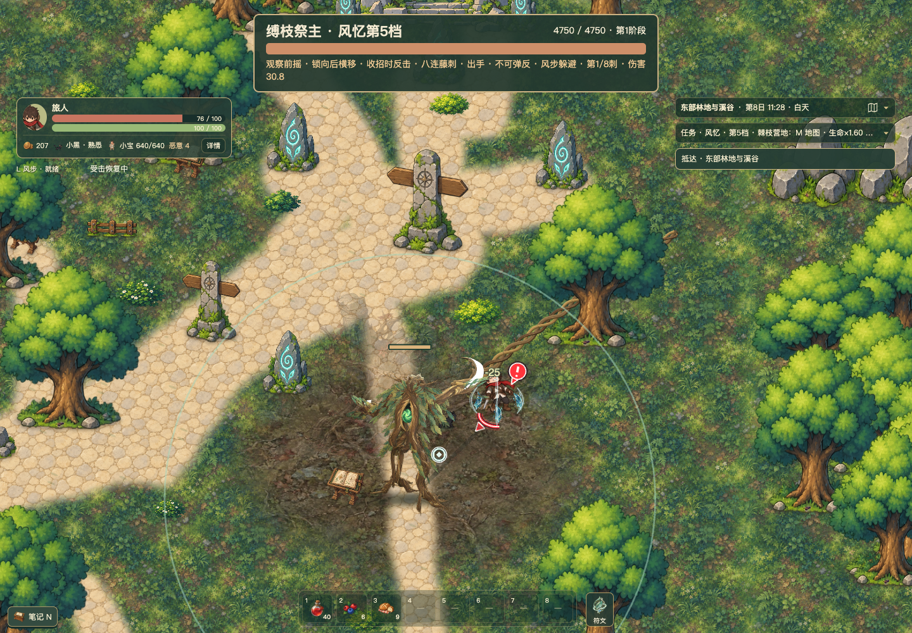
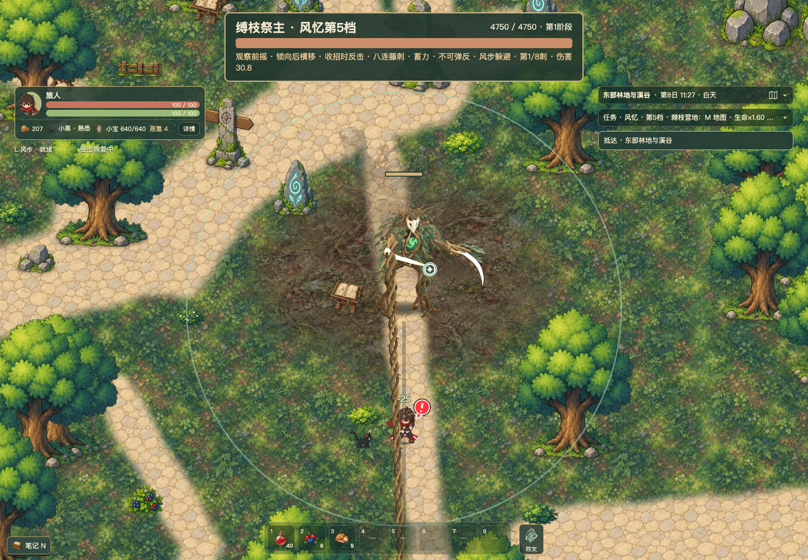

东侧首领 · 连续播放优化
保持同一精修模型和战斗规则，优化开场、循环、换手与移动过渡的资源预取。对照是相同固定存档、相同场景和视口的真实战斗，包含载入界面；各视频可以独立播放，未伪装成逐帧同步对照。
上一版 · PNG 双首领
优化后 · PNG 双首领
独立环境完整回归结果
| 指标 | 上一版 | 本轮 |
|---|
| PNG 双首领非关键回退帧次 | 118 | 2 |
| 关键出手缺帧 | 0 | 0 |
| 合计纹理上限 | 192 MiB | 192 MiB |
| 单体压缩／PNG 回退 | 9／20 | 0／0 |
双实体 PNG 回退减少约 98%，仍有少量非关键回退。数字来自整段游戏采样，视频原始采样为 25 帧，不能用录像重复帧冒充更高采样率。
优化后 · 四分之一慢放
真实背景与低闪光检查
树林背景 · 方向三

低闪光与简化特效

查看 Blender 动作与建模对照。本轮没有重新修改模型、图集比例或伤害，最终美术观感仍按实际试玩判断。